Post LinkedIn.
Un chiffre sourcé, un visage, rien d'autre. Regardez-le aussi sur votre téléphone.

Trois duos gratuits sur les mêmes contenus : un post LinkedIn, un carrousel, une page de lead magnet, une slide et un en-tête de newsletter. Choisissez le duo et le gras des titres dans la barre : toute la page change.
11 200 heures rendues chaque année aux équipes de Sofinco.
Des agents IA construits pour les processus de chaque équipe, mis en production, puis suivis. Ce qui ne sert pas s'arrête, et vous ne le payez plus.
des agents mis en production.
Source : cas client Sofinco, groupe Crédit Agricole
Voir les formatsUn chiffre sourcé, un visage, rien d'autre. Regardez-le aussi sur votre téléphone.
Couverture, page intérieure, dernière page. Le code des points se lit avec sa légende.
Le texte long : c'est là que la police de texte compte le plus.
| Duo | Effet | Pour qui | Point faible |
|---|---|---|---|
| Zain + Instrument Sans | Contraste net : titres chaleureux, texte précis. Recommandé. | Le meilleur équilibre DG, DSI, Head of AI et métiers | Le texte seul est sobre |
| Zain + Figtree | Harmonie : tout est rond et doux | Le plus humain, idéal pour les métiers | Moins de tenue face à un DSI |
| Zain + Atkinson | Lisibilité maximale en petite taille | Pensé pour les lecteurs qui peinent à lire | Le moins élégant |
Gras ou normal ? Notre piste : titres en gras pour LinkedIn, en normal pour les documents et les slides.